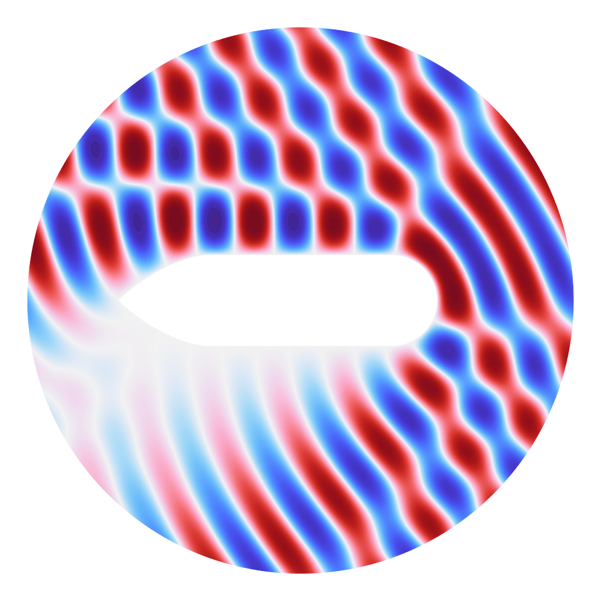
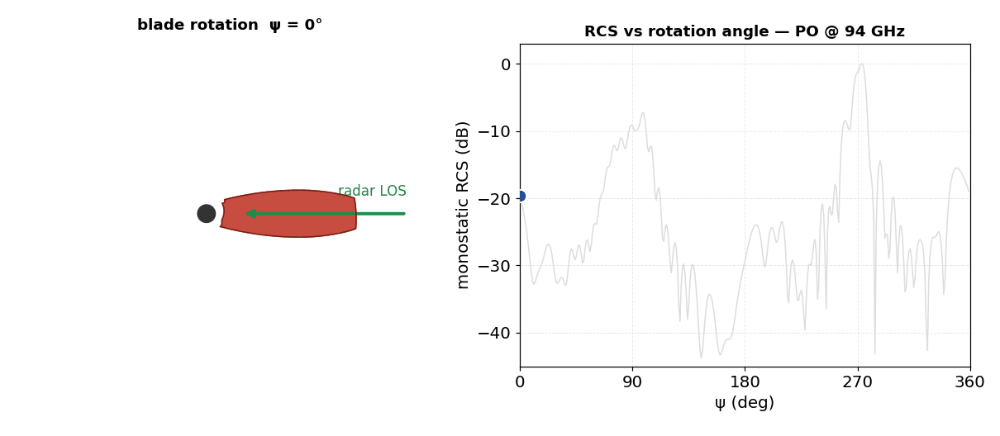

Radar · Sensing · Signal processing
Millimeter-wave & micro-Doppler radar systems
My group works on 94 GHz W-band radar. At these frequencies the short wavelength provides high phase and Doppler sensitivity to small motions; we develop radar systems and micro-Doppler processing that converts motion-induced modulations into features for target classification — combining classical estimation with machine learning.
Applications
The same core sensor and processing chain addresses a range of published and ongoing remote-sensing problems:
- Target classification & low-RCS detection — micro-Doppler signatures and machine-learning methods support classification of vehicles and other targets; ongoing work examines drone detection.
- Remote metrology — velocity-independent vehicle-height estimation from the ratio of two Doppler components (bridge-collision prevention).
- Condition monitoring — multi-fault detection on wind turbines and rotating machinery from their micro-Doppler spectra.
- Human sensing — remote sensing of human micro-motion, including speech-related vibration (published feasibility study, Remote Sensing 2025), fall detection, and limb-movement signatures; ongoing work targets contactless vital-signs monitoring (respiration and heart rate).
Method
Work spans the full chain: waveform and antenna choices, time–frequency (spectrogram) analysis, matched filtering and high-resolution estimation, and deep-learning classifiers — implemented and validated in MATLAB, with experimental data from real W-band hardware. Antenna front-ends are designed with the same full-wave tools used for the antenna work.
Radar cross-section (RCS) modelling
How strongly a target reflects, its radar cross-section (RCS), sets received power and detectability and can contribute aspect-dependent features for classification. I compute RCS from full-wave electromagnetic scattering and, for electrically large targets, physical-optics (PO) methods, in COMSOL and MATLAB.


Selected radar publications
- Balal Y, Steinmetz N, Sherenzon A, Balal N. Bending-Aware Spectrogram Correlation for W-Band Quadcopter Detection: A Physics-Informed Non-Coherent Detection Framework. Sensors 26, 4851 (2026). doi:10.3390/s26154851
- Steinmetz N, Balal N. Feasibility Study of Real-Time Speech Detection and Characterization Using Millimeter-Wave Micro-Doppler Radar. Remote Sensing 17, 91 (2025). doi:10.3390/rs17010091
- Richter Y, Balal N. High-Resolution Millimeter-Wave Radar for Real-Time Detection and Characterization of High-Speed Objects with Rapid Acceleration Capabilities. Electronics 13, 1961 (2024). doi:10.3390/electronics13101961
- Richter Y, Balal N, Pinhasi Y. Neural-Network-Based Target Classification and Range Detection by CW MMW Radar. Remote Sensing 15, 4553 (2023). doi:10.3390/rs15184553
- Balal Y, Yarimi A, Balal N. Non-Imaging Fall Detection Based on Spectral Signatures Obtained Using a Micro-Doppler Millimeter-Wave Radar. Applied Sciences 12, 8178 (2022). doi:10.3390/app12168178
- Balal Y, Balal N, Richter Y, Pinhasi Y. Time-Frequency Spectral Signature of Limb Movements and Height Estimation Using Micro-Doppler Millimeter-Wave Radar. Sensors 20, 4660 (2020). doi:10.3390/s20174660
Applied research and technical capabilities
- Radar signal processing and micro-Doppler analysis
- Target classification and performance evaluation
- Radar cross-section and scattering simulation
- MATLAB algorithm development and experimental-data analysis
- Feasibility and proof-of-concept studies
Development and assessment of a physics-based radar-processing method, including modelling, algorithm design, experimental-data analysis, and performance evaluation.
For research collaboration, technical project inquiries, or expert review related to these topics, you are welcome to contact me.
Discuss a technical challenge